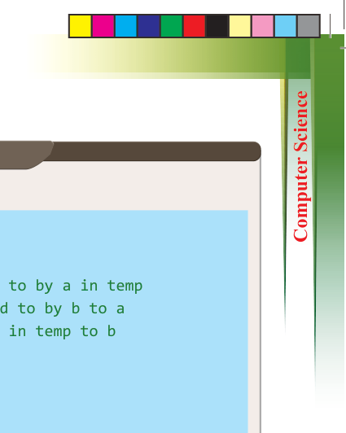
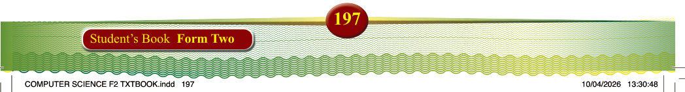

197
Student’s Book Form Two
Output:
Before swap: x = 5, y = 10
Afterswap:x=10,y=5
Referring to this code, the swap() function takes two pointers (int *a and int *b), which hold the addresses of x and y. In main(), we use the “&” operator to pass the addresses of x and y to the swap() function. Inside the function, the values of x and y
are swapped using their memory addresses, so the changes directly affect the original
variables in main(). After the function call, x and y are swapped.
Note: Using a separate function like swap() is mainly to demonstrate the concept of call by reference. The swap() function is useful when you need to swap values in different places in your code. However, using it requires understanding how the function works with memory addresses (pointers) in call-by-reference.
Function parameters and return types
Function parameters are values passed into a function, and return types define the type
of value the function returns after execution. Parameters are defined in the function’s
parentheses and used inside the function. The return type specifies what type of value
the function returns. The types of values include int, float, char, and double.
#include <stdio.h> void swap(int *a, int *b) { int temp; temp = *a; // Store the value pointed to by a in temp
*a = *b; // Assign the value pointed to by b to a
*b = temp; // Assign the value stored in temp to b
} int main() { int x = 5, y = 10;
// Before swapping printf(“Before swap: x = %d, y = %d\n”, x, y);
// Calling the swap function and passing the addresses of x and y swap(&x, &y);
// After swapping printf(“After swap: x = %d, y = %d\n”, x, y); return 0;
}
Program example 4.14:
Demonstration of a function call by value in C